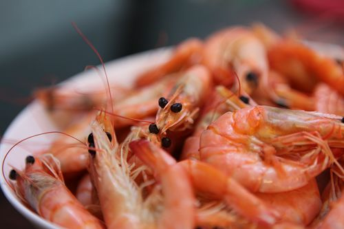

有一种新鲜叫做爱情 @ Oct 11, 2010
日文的“爱情”不是指恋人之间的卿卿我我，而是指家人之间的爱，一种能让人振奋的“爱的感情”。所以北海道广濑太太的口头禅就是“吃好吃的东西，会感到里面有满满的爱情呦。”
当我们在用“加法”提升味觉时，潮汕人说：“你们这是吃菜，还是吃作料？”这就是为什么在众多火锅风格中最爱吃“澳门豆捞”的原因，潮菜用的是“减法”，萃取原味，调料摆放在一边，根据自己口味比配。
午饭后跑去菜场买菜，为晚饭准备了鲜虾和桂鱼，桂鱼的生命力象它的价格一样强，五脏六腑都没了，拎回家还在动，不得已龇牙裂嘴的洗它，加上菜油、黄酒、糖和盐，腌在冰箱里，晚上清蒸。
朋友问：“腌好以后清蒸的时候你放啥？姜丝葱么？”
答：“青红椒，姜丝，如果有点火腿片更好。”
“你这种做法比广东的做法丰富得多......不算‘清’蒸，应该叫‘彩’蒸。”
最终只切了香菇和青椒丝，不得不说还是受到了上述问答影响的。蒸鱼最简单的方法直接倒“蒸鱼豆豉酱油”，这次偏偏不乐意，想品尝趋于原味的鲜美鱼肉，没有放味精鸡精，舌头上的味觉细腻且有层次。与友讨论味精的起源，上网百度，果真是日本人发明的，被命名为“味之素”，还获得了专利。后被中国人引用研改成味精，西方人用味精吗？热爱美食又好奇的话，不妨买本《考吃》的书回来读。

一只贼头贼脑的虾。

11 Responses to “有一种新鲜叫做爱情”
2010-10-12
大爱胜于小爱
2010-10-12
为什么我昨天留言没了？难道没留上？我不会弄鱼，不敢弄，觉得滑溜溜的害怕。。。不过对于吃，我觉得，吃原味和吃带佐料香料的，都没所谓。。。这些都是食材，有些是纯味，有些是混合味，互相弥补和掩盖，才有了美食的多种多样。。。
2010-10-12
味之素～谷氨酸钠，尽量少吃．完全依赖对身体有害．有收到？
2010-10-12
我是这样蒸鱼的，洗好后，底下铺生姜，然后直接蒸10分钟，拿出，铺上葱，倒上蒸鱼酱油，热油一浇，这样吃起来和饭店里味道一样，鱼比较原味
2010-10-12
蒸鱼酱油和油下锅煮沸，浇在蒸好的鱼上？
2010-10-12
我一般这样做。蒸之前先将鱼里外抹一层料酒，再薄薄的一层盐，再一层色拉油，肚子塞上葱和姜丝，鱼下压两个葱白再放入盘中（让热蒸气流通），在一斤以内的鱼蒸8-9分钟，再关火闷5分钟，倒掉盘内的水（腥气），倒上李家的蒸鱼豉油，另起锅，炼点热油浇上，这就齐活了~~有机会做给你尝尝~~谢谢你的回复！
2010-10-13
不是，是酱油浇鱼上，然后再浇热油，料酒我原是加的，后来人家教我不要，说会让鱼肉老
2010-10-13
我说的做法是不加盐不加料酒的，完全到李锦记那酱油的鲜味，其实大家想想，在酒店吃那蒸鱼时，鱼本身是没有味道的，就是一个嫩，然后蘸那汤汁才有味道
2010-10-13
你不腌鱼吗？我家常规做法是用黄酒、盐糖抹在鱼肉上，等15分钟再蒸。
2010-10-13
我以前腌的，后来觉得肉确实会老一些，不过最近没做了，鲈鱼涨得太厉害了，就不怎么吃蒸鱼了
2010-10-14
看起来，色、香、味…..,（¯﹃¯）
Leave A Reply
存档只读，评论已关闭。